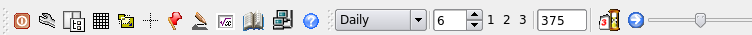

Toolbar

Description
The most used Qtstalker functions are found here in the toolbar. From left to right they are:
- Quit Qtstalker - shuts down the application.
- Preferences - displays the application preferences dialog
- Side panel toggle - Shows/hides the side panel area.
- Grid toggle - Shows/hides the chart grids.
- Scale to screen - Toggles the scaling of charts to visible data or entire data series.
- Crosshairs - Toggles the chart crosshairs. If the crosshairs are turned on; left clicking the mouse anywhere on the main chart, a x/y pair of intersecting lines will be drawn at the point where the mouse was clicked. This allows you to locate specific values on the main chart. The value will appear in the status area. The status message will be the x(date) and y(value) of the pointer.
- Paper Trade Mode - Toggles the paper trade mode.
- Draw Mode - Toggle draw mode for chart object functions.
- New Indicator - Displays the new indicator dialog.
- Data window - Displays the data window.
- Quotes - Displays the quote dialog.
- Help - Displays the help system dialog.
- Compression - Toggles the chart compression. eg.daily or weekly bars
- Bar spacing - Changes the pixel space between each bar.
- Bar spacing quick change buttons - Change the pixel space between each bar as you preset quickly.
- Bars - Loads the total number of bars at one time.
- Paper Trade Date - Sets the date to start paper trading. Only visible when paper trade mode is on.
- Load Next Bar - Advances the chart one bar. Only visible when paper trade mode is on.
- Bar slider - Allows you to shift the chart left or right depending on how many bars are loaded. It behaves like a scrollbar but less invasive.